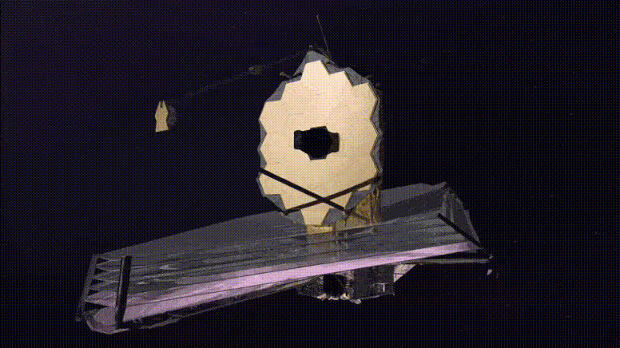
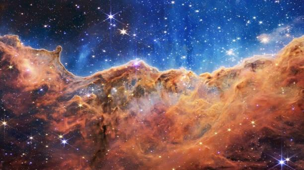

The James Webb Space Telescope (JWST) is a space telescope currently conducting infrared astronomy. As the largest optical telescope in space, it is equipped with high-resolution and high-sensitivity instruments, allowing it to view objects too old, distant, or faint for the Hubble Space Telescope. This enables investigations across many fields of astronomy and cosmology, such as observation of the first stars, the formation of the first galaxies, and detailed atmospheric characterization of potentially habitable exoplanets.
The mass of the James Webb Space Telescope is about half that of the Hubble Space Telescope. The JWST has a 6.5 m (21 ft)-diameter gold-coated beryllium primary mirror made up of 18 separate hexagonal mirrors. The mirror has a polished area of 26.3 m2 (283 sq ft), of which 0.9 m2 (9.7 sq ft) is obscured by the secondary support struts, giving a total collecting area of 25.4 m2 (273 sq ft). This is over six times larger than the collecting area of Hubble's 2.4 m (7.9 ft) diameter mirror, which has a collecting area of 4.0 m2 (43 sq ft). The mirror has a gold coating to provide infrared reflectivity and this is covered by a thin layer of glass for durability.
 Location and orbit JWST operates in a halo orbit, circling around a point in space known as the Sun–Earth L2 Lagrange point, approximately 1,500,000 km (930,000 mi) beyond Earth's orbit around the Sun. Its actual position varies between about 250,000 and 832,000 km (155,000–517,000 mi) from L2 as it orbits, keeping it out of both Earth and Moon's shadow. By way of comparison, Hubble orbits 550 km (340 mi) above Earth's surface, and the Moon is roughly 400,000 km (250,000 mi) from Earth. Objects near this Sun–Earth L2 point can orbit the Sun in synchrony with the Earth, allowing the telescope to remain at a roughly constant distance with continuous orientation of its sunshield and equipment bus toward the Sun, Earth and Moon. Combined with its wide shadow-avoiding orbit, the telescope can simultaneously block incoming heat and light from all three of these bodies and avoid even the smallest changes of temperature from Earth and Moon shadows that would affect the structure, yet still maintain uninterrupted solar power and Earth communications on its sun-facing side. This arrangement keeps the temperature of the spacecraft constant and below the 50 K (−223 °C; −370 °F) necessary for faint infrared observations.
